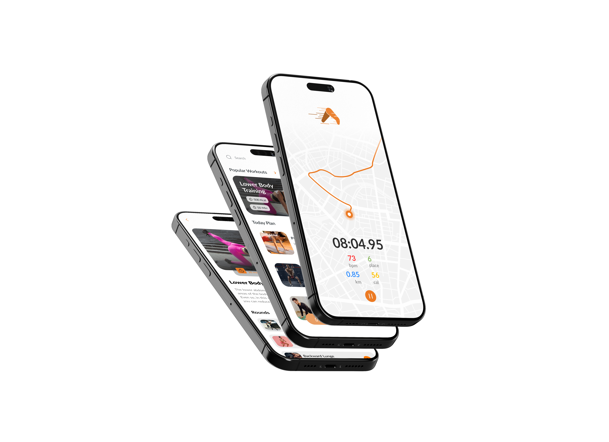

Fitness Application
Actura
A fitness platform connecting runners anywhere in the world through live group sessions, recorded workouts, and scheduled community runs — so your training group follows you wherever life takes you.

Overview
The Problem
People who prioritise fitness face a persistent conflict when life disrupts routine — traveling for work, relocating abroad, or simply losing access to their usual training community. Existing fitness apps lock users into solo mode or require all participants to share the same physical space. Actura was built around a single question: what if your running group could follow you anywhere?

Process
Approach
Actura required designing for two fundamentally different participation modes while keeping the community feeling cohesive. The core challenge was making both synchronous and asynchronous experiences feel equally connected.
Unified Participation Modes
Designed dual entry points — recorded video workouts for flexible, asynchronous training and live run groups that synchronise participants in real time regardless of location. Both modes feed into a shared activity log, keeping the community connected even across different time zones.
Scheduled Social Running
Built a group scheduling system around recurring run events with time slots, difficulty levels, and pace groups. Runners commit in advance, receive reminders, and join a shared experience that mirrors the accountability of an in-person training group — without requiring physical proximity.
Running Together Remotely
Designed the run-abroad experience — letting users join their home group while traveling internationally. GPS-synced live sessions, shared audio channels, and real-time pace matching allow a runner in Tokyo to move alongside their group in London, preserving the social rhythm of training together.



Outcome
Results
Actura delivers a platform where geography becomes irrelevant to participation — fitness becomes portable, social, and consistent regardless of where life takes its users.
Community Without Boundaries
Created a fitness experience where location is no longer a barrier. Users maintain consistent training habits whether at home or abroad, with their community always accessible and in sync.
Flexible Engagement Model
The blend of recorded and live content ensures no run is ever missed. Asynchronous workouts keep users active between scheduled group sessions, improving long-term retention and training consistency.
Accountability at Scale
Scheduled group runs with public commitment drove higher session completion rates, replicating the social accountability of a physical running club within a fully digital, globally distributed environment.